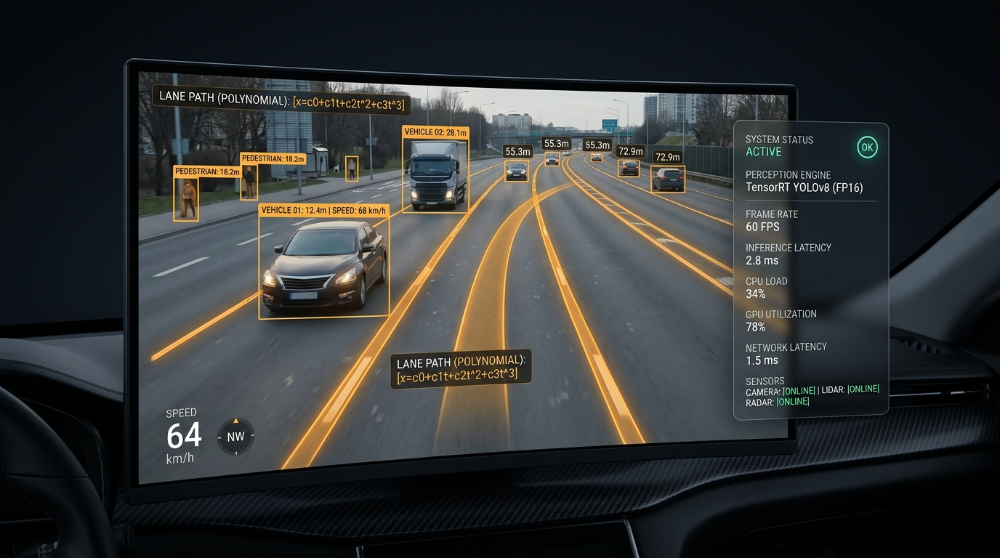
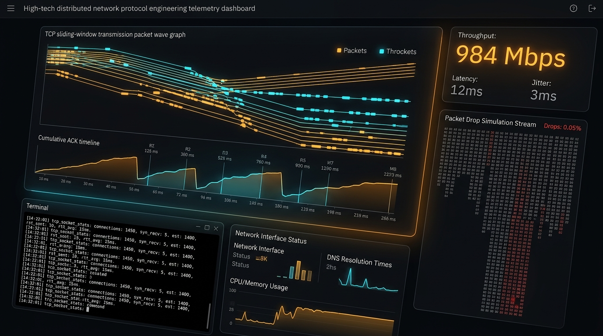
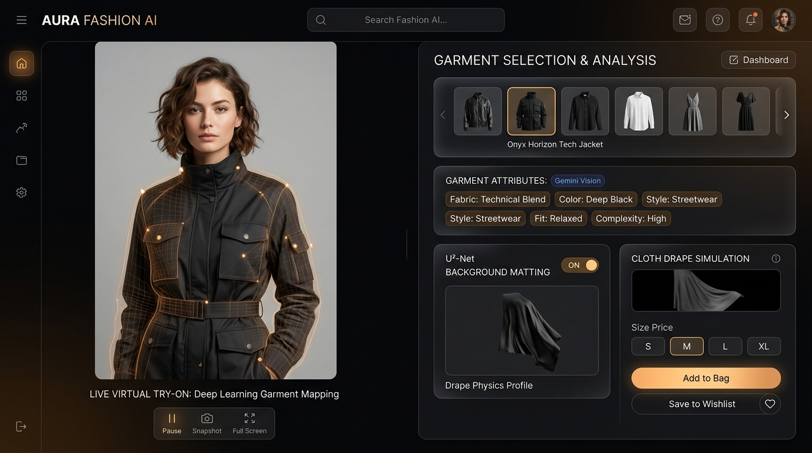
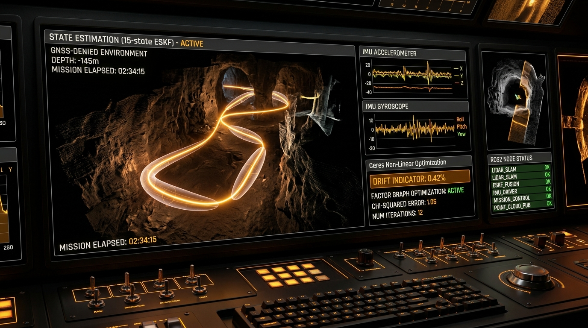
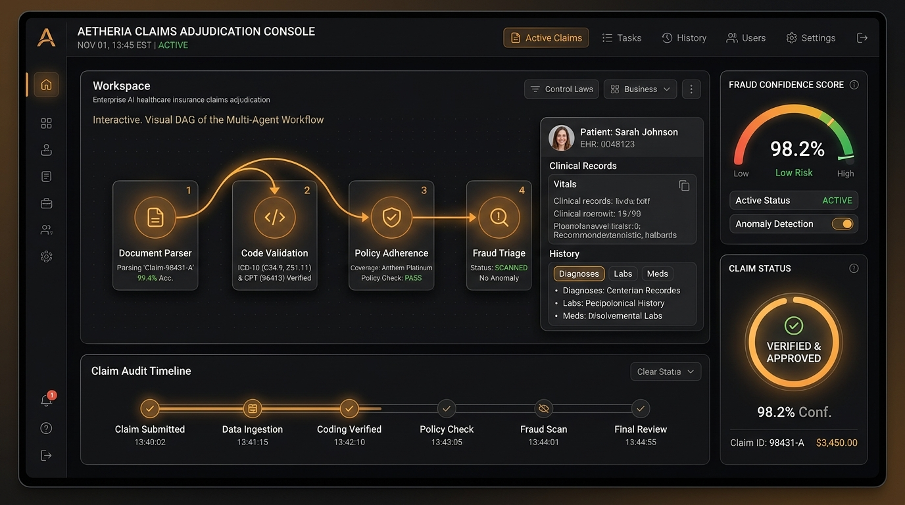

NAViGO
Intelligent Navigation Engine
Computer vision based navigation system for autonomous vehicles with real-time obstacle detection.
Computer Engineering Student | AI/ML Enthusiast | Builder
I build practical solutions using AI, software and design. Currently exploring how technology can solve real-world problems and create meaningful impact.
A collection of projects focused on AI, web development and innovative solutions.

Computer vision based navigation system for autonomous vehicles with real-time obstacle detection.

A custom TCP/IP protocol implementation to visualize packet transmission and acknowledgments.

Virtual try-on system for e-commerce using deep learning and computer vision.

Continuous-time sensor fusion fusing 6-DoF IMU and odometry with Ceres non-linear optimization for GNSS-denied robotics.
Dual-stream cross-modal attention ResU-Net reconstructing cloud-occluded multispectral imagery using Sentinel-1 SAR.

Autonomous multi-agent workflow parsing clinical EHR documents, verifying policy clauses, and detecting fraud with audit trails.
I'm a Computer Engineering student with a strong interest in Artificial Intelligence, Machine Learning and software development. I enjoy building products, solving real-world problems and exploring new technologies.
Building intelligent solutions with real-world impact.
Turning ideas into scalable web applications.
Exploring business ideas and product development.
Team collaboration, project management and growth mindset.
Autonomous perception pipelines, distributed systems, deep learning architectures & modern full-stack web platforms
Engineering multimodal AI perception pipelines, distributed backend architectures, and mission-critical autonomous systems.
SET NX EX) and WebSockets to prevent race-condition double purchases on rare 1-of-1 catalog items during live pop-up drops.
Comprehensive catalog of specialized engineering systems authored across deep learning, robotics, agentic AI, and distributed systems:
Continuous-time sensor fusion fusing 6-DoF IMU kinematics and wheel odometry with a 15-state Error-State Kalman Filter (ESKF). Integrated deep zero-velocity updates (ZUPT) and Ceres non-linear optimization to bound positioning drift to 0.42% over GNSS-denied subterranean trajectories.
Dual-stream cross-modal attention network reconstructing cloud-occluded optical multispectral imagery by conditioning on Sentinel-1 C-band synthetic aperture radar (SAR) backscatter. Reached 32.8 dB PSNR and 0.91 SSIM cloud-penetration fidelity.
Autonomous vehicle perception stack executing real-time obstacle detection and dual-ROI sliding-window polynomial lane tracking at sub-3 ms CPU latency on ARM Cortex-A processors. Delivers predictive collision warnings and deterministic heading steering commands.
Custom user-space sliding-window transport protocol simulator in modern C++. Features Selective Repeat (SR), cumulative acknowledgments, synthetic channel degradation (latency jitter, randomized drops, bit corruption), and live terminal telemetry tracking cwnd and throughput dynamics.
Production multimodal fashion platform with in-browser WebAssembly background matting (U²-Net) executing in <3.5s without cloud GPU costs. Automated apparel cataloging via Google Gemini Vision API cutting creation time from 8 minutes to <30 seconds with Upstash Redis atomic locks.
Hybrid dense-sparse retrieval system combining Qdrant dense vector embeddings with BM25 sparse keyword search and cross-encoder re-ranking. Indexes 10,000+ national building codes and ISO regulations, delivering paragraph-level verifiable citations with zero hallucinations.
Directed Acyclic Graph multi-agent runtime built with LangGraph and FastAPI. Features dynamic worker delegation, cyclical validation loops, cryptographic hash checks for cited documents, and stateful human-in-the-loop audit checkpoints.
Ultra-low-latency vector graphics rendering engine and Model Context Protocol (MCP) tool provider. Enables LLMs to programmatically generate CAD-grade technical drawings and compile high-resolution vector PDFs under 150 ms with chunked streaming.
Constructed a 108,000-sample parallel idiom corpus and fine-tuned multilingual transformer models (IndicBERT, XLM-RoBERTa) to translate idioms and non-compositional phrases across Indic languages with 88.4% contextual semantic fidelity.
Spatial bounding-box OCR engine parsing multi-page financial statements, passbooks, and tabular ledgers. Combines LayoutLMv3 spatial tokens with heuristic geometric alignment, achieving 99.1% cell-extraction accuracy on degraded document scans.
Fully air-gapped speech transcription and multimodal indexing engine running on zero-egress hardware. Optimized Whisper Large-v3 with CTranslate2 INT8 quantization and FFmpeg streaming audio filters, sustaining 4.2x real-time transcription speeds.
Kernel simulation environment implementing Preemptive Round-Robin, Multi-Level Feedback Queues (MLFQ), and dynamic memory fragmentation allocators (First/Best/Worst Fit). Transmits live telemetry over WebSockets to an interactive Gantt timeline visualizer.
High-concurrency inventory reconciliation platform enforcing strict serializable transaction isolation, distributed row-level locking (SELECT FOR UPDATE), and automated 2FA ledger approval workflows across federated regional supply depots.
Dual-domain facial manipulation forensics framework combining 2D Discrete Cosine Transform (DCT) frequency anomaly detection with spatiotemporal eye-blink / facial landmark coherence analysis. Achieves 94.6% AUC-ROC against generative diffusion face-swaps.
I am a Computer Engineering student based in Mumbai, India, passionate about the convergence of deep learning, computer vision, and high-performance distributed systems.
My work spans building end-to-end autonomous vehicle perception pipelines, designing resilient multi-agent DAG architectures, and writing robust low-level network protocols in modern C++ and Python.
Choose your preferred channel for instant notifications or compose a message below:
Comprehensive catalog of programming languages, deep learning frameworks, robotics toolkits, and distributed infrastructure: